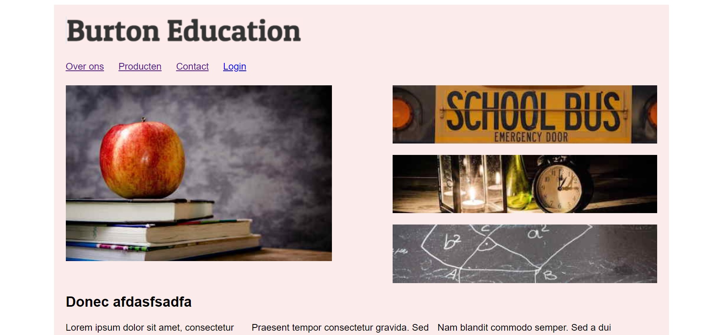
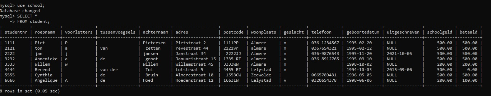

My projects
Burton
Burton was the first website that I made with just HTML/CSS. it was nothing special but a good experience. I learned much while building that website. 
Crook app
The Crook app was a javascript Project. With the crook app you can cycle through facial parts of different people. That way you can match a mouth with some weird eyes.
MYSQL
With MYSQL I made a database and learned how to use a database. I started with building the database and after I learned how to update, dump and drop a database. 